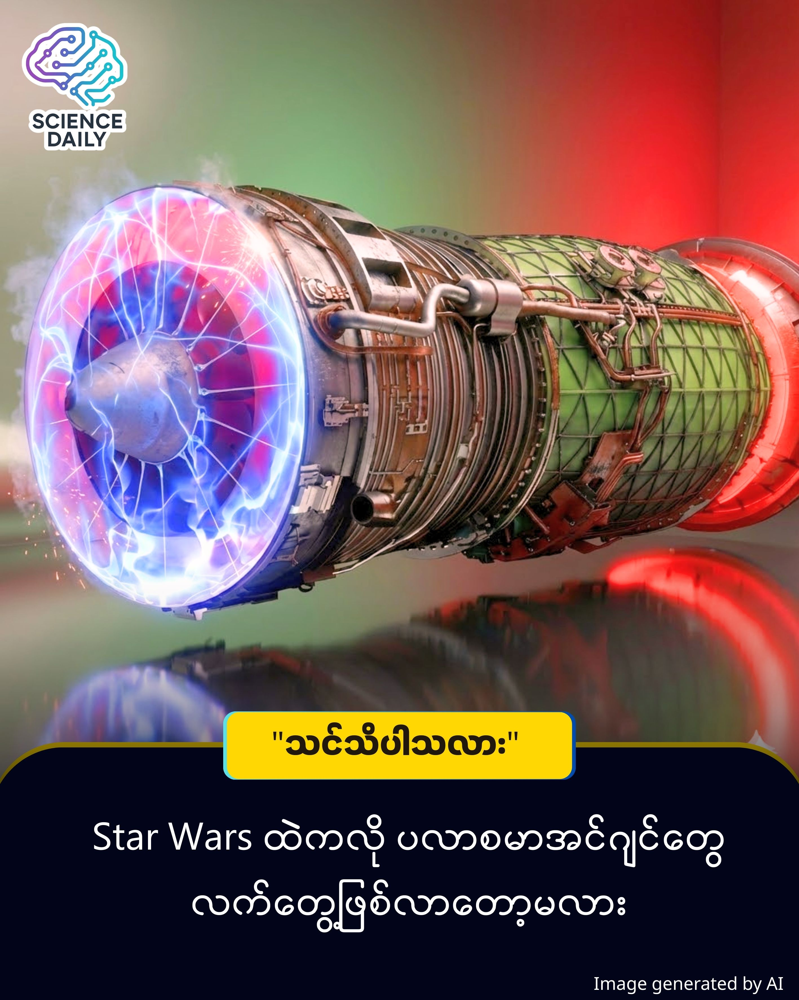

Plasma Engine - Aviation Innovation
လေယာဉ်ဆီ လုံးဝမလိုတော့မယ့်ခေတ် ရောက်လာတော့မလား? (လျှပ်စစ်သီးသန့်သုံး ဂျက်အင်ဂျင်)

လေယာဉ်ဆီ လုံးဝမလိုတော့မယ့်ခေတ် ရောက်လာတော့မလား? (လျှပ်စစ်သီးသန့်သုံး ဂျက်အင်ဂျင်)
လေယာဉ်ပျံသန်းဖို့အတွက် လေယာဉ်ဆီ (Fossil Fuel) လုံးဝထည့်စရာမလိုဘဲ လေထုထဲက လေ (Air) နဲ့ လျှပ်စစ် (Electricity) ကိုပဲ အသုံးပြုပြီး မောင်းနှင်နိုင်မယ့် နည်းပညာတစ်ခု ပေါ်ထွက်လာပါပြီ ။ ဒါဟာ သာမန်စိတ်ကူးယဉ် အိပ်မက်တစ်ခု မဟုတ်ပါဘူး။ တရုတ်နိုင်ငံ ဝူဟန်တက္ကသိုလ်က သုတေသီတွေ စမ်းသပ်အောင်မြင်ထားတဲ့ ရှေ့ပြေးပရောဂျက်တစ်ခု ဖြစ်ပါတယ်။
ဘယ်လို အလုပ်လုပ်သလဲ?
ဒီနည်းပညာရဲ့ အဓိက သော့ချက်က Plasma (ပလာစမာ) ပါ ။ ရိုးရှင်းအောင် ပြောရရင် -
ပထမဆုံး လေထုထဲက လေကို စက်ထဲ စုပ်ယူပြီး ဖိသိပ်လိုက်ပါတယ် ။
ပြီးရင် အိမ်မှာသုံးတဲ့ မိုက်ခရိုဝေ့ဖ် (Microwave) မီးဖိုတွေမှာလိုပဲ လှိုင်းတွေလွှတ်ပြီး အဲ့ဒီလေကို အပူပေးလိုက်တဲ့အခါ လေမော်လီကျူးတွေက Plasma (ပလာစမာ) အဖြစ် ပြောင်းသွားပါတယ် ။
ပလာစမာဆိုတာ အပူချိန်အရမ်းပြင်းပြီး လျှပ်စစ်ဓာတ်ဆောင်နေတဲ့ ဓာတ်ငွေ့အမျိုးအစားပါ။ (နေလုံးကြီးနဲ့ လျှပ်စီးလက်တာတွေက ပလာစမာတွေပါပဲ) ။
အဲ့ဒီ ပလာစမာတွေက အပူချိန်နဲ့ ဖိအား အလွန်မြင့်တက်လာပြီး အနောက်ကို အရှိန်နဲ့ ကန်ထွက်တဲ့အခါ လေယာဉ်ကို ရှေ့ရောက်စေမယ့် တွန်းကန်အား (Thrust) ကို ရရှိစေတာ ဖြစ်ပါတယ် ။
ဘာတွေ ထူးခြားလဲ?
ပုံမှန်အားဖြင့် အာကာသယာဉ်တွေမှာသုံးတဲ့ ပလာစမာအင်ဂျင် (ဥပမာ - NASA ရဲ့ Xenon thrusters) တွေက လေထုထဲမှာ သုံးလို့မရပါဘူး ။ ဒါပေမဲ့ အခု ဝူဟန်တက္ကသိုလ်က ပါမောက္ခ Jau Tang နဲ့ အဖွဲ့ တီထွင်လိုက်တဲ့ ဒီဇိုင်းကတော့ ကမ္ဘာ့လေထုထဲမှာ ရှိပြီးသား လေ ကိုပဲ လောင်စာအဖြစ် သုံးထားတာကြောင့် လေယာဉ်တွေမှာ လက်တွေ့အသုံးပြုဖို့ ဖြစ်နိုင်ခြေ ရှိလာတာပါ ။
သူတို့ရဲ့ စမ်းသပ်ချက်အရ ဒီအင်ဂျင်ရဲ့ စွမ်းဆောင်ရည်ဟာ လက်ရှိ လေကြောင်းလိုင်းတွေမှာသုံးနေတဲ့ ဂျက်အင်ဂျင်တွေရဲ့ စွမ်းဆောင်ရည်နဲ့ ယှဉ်နိုင်တဲ့ အနေအထားမှာ ရှိနေတယ်လို့ ဆိုပါတယ် ။
လက်တွေ့ဖြစ်နိုင်ပါ့မလား?
ဒီသုတေသနကို AIP Advances ဂျာနယ်မှာ ဖော်ပြထားပါတယ် ။ လက်ရှိမှာ ဒါဟာ ဓာတ်ခွဲခန်းစမ်းသပ်ချက် (Prototype) အဆင့်ပဲ ရှိပါသေးတယ် ။ ပလာစမာရဲ့ အပူချိန်က ဒီဂရီ ၁,၀၀၀ ကျော်တဲ့အတွက် သာမန် သတ္တုတွေ အရည်ပျော်သွားနိုင်လို့ အပူဒဏ်ခံနိုင်မယ့် ပစ္စည်းတွေ လိုအပ်နေပါသေးတယ် ။ လေယာဉ်ကြီးတစ်စင်းစာ မောင်းနှင်ဖို့ဆိုရင် မဂ္ဂါဝပ် (Megawatts) ချီတဲ့ လျှပ်စစ်စွမ်းအင် လိုအပ်မှာဖြစ်ပြီး၊ လက်ရှိ ဘက်ထရီနည်းပညာတွေက ဒီလောက်စွမ်းအင်ကို ပေါ့ပေါ့ပါးပါးနဲ့ သယ်ဆောင်ဖို့ မလွယ်ကူသေးပါဘူး ။
ပါမောက္ခ Tang ကတော့ နောက် ၅ နှစ်လောက်ဆိုရင် ဒရုန်းတွေနဲ့ ကုန်တင်လေယာဉ်ငယ်တွေမှာ စတင်အသုံးပြုနိုင်မယ်လို့ ခန့်မှန်းထားပါတယ် ။ တကယ်လို့သာ ဒီနည်းပညာ အောင်မြင်ခဲ့ရင် ကမ္ဘာကြီးပူနွေးလာမှုကို ဖြစ်စေတဲ့ ဖန်လုံအိမ်ဓာတ်ငွေ့ ထုတ်လွှတ်မှုကို အကြီးအကျယ် လျှော့ချနိုင်မယ့် Green Aviation ခေတ်ကို ဦးဆောင်နိုင်မှာ ဖြစ်ပါတယ် ။
Source: New Atlas, The Brighter Side of News